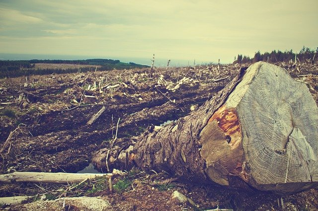
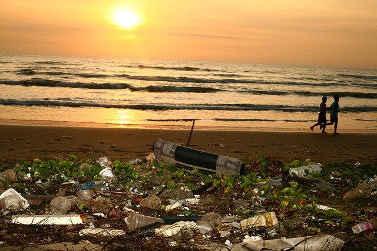
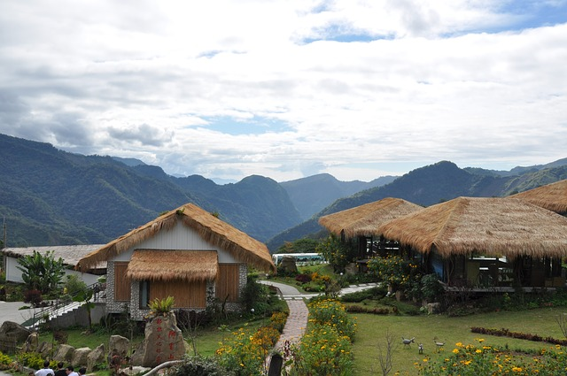

ここでは、第1の危機と第2の危機と、その解決策について説明していきます。
第1の危機は、人間活動や開発などが引き起こしている危機です。例として、森林破壊、海洋汚染を挙げようと思います
まずは、森林破壊の現状についてです。我々は、新しい土地を開拓して利用するためや、木材を得るために、昔から森林伐採をしてきました。ですが、それは時として森林破壊を招くことがあり、生態系の破壊へと繋がることがあります。環境省によれば、世界の森林面積は約40.3億ヘクタールで、全陸地面積の約31%を占めているそうです。しかし、農地への転用や薪の過剰採取などが原因で、世界の森林は減少を続けています。その面積は、なんと毎年520万ヘクタールです(2000年から2010年までの平均)。森林の減少によってさまざまな生物が生息地を失っていると考えられます。森林伐採をするのであればその分植林をしたり、一度に伐採しすぎないように気をつけるなど、森林の利用は計画的におこなうひつようがあります。
次に、海洋汚染について考えていきます。海洋汚染の中でも近年特に問題視されているのは、プラスチックゴミによる汚染です。我々は便利な暮らしのために、安価で手軽に扱うことのできるプラスチックを大量に使用しています。しかし、手軽であるがゆえに、きちんと処理されずに捨てられてしまうことも少なくありません。そして、そのプラスチックゴミの多くは最終的に海へと流れ着くのです。WWFによれば、世界の海にはすでに1億5000万トンのプラスチックゴミが存在しているそうです。そして、年間800万トンが新たに流入していると推定される。海洋生物によるこれらのゴミの摂取率は、ウミガメで52％、海鳥では90％と考えられています。本来、プラスチックは自然界に存在しない物質でしたが、このように多くの生物に影響を与えています。プラスチックごみをなるべく出さないために、プラスチックの使用を減らすことと、使用するのであればきちんと処理する必要があります。
第2の危機は、自然に対する人間の働きかけが減ることによる危機です。例として、里山や草原の減少、農業や林業の衰退を挙げようと思います。
生物多様性と聞くと、大切なのは人が介入していない山奥の森林のことだと想像する人が多いでしょう。ですが、少なくとも日本の場合はそうとは言えません。環境省によれば、絶滅危惧種の生息する地域の約半数は、人が介入している里山の中にあるといいます。里山は、「集落を取り巻く農地、ため池、二次林と人工林、草原などで構成される地域であり、相対的に自然性の高い奥山自然地域と人間活動が集中する都市地域との中間に位置する」と定義されています。このような適度な人の介入が、これまでの日本の生物多様性を維持してきました。ところが、近年は人口が都市部に集中し、里山の地域は過疎化しています。そして農産業の担い手が不足し、里山は荒廃しつつあります。この影響を受けている生物の1つがコウノトリです。里山の河川や水田の荒廃によって餌となる魚やカエルが減少し、日本のコウノトリは絶滅してしまいました。適度な人の介入も、生物多様性においては重要なのです。

次に、里山を支える農業の衰退について考えていきます。農林水産省の「農村の現状に関する統計」によれば、平成22年から31年にかけて、日本の総人口に対する農家の割合は5.1%から3.2%へと減少しています。また高齢化も進んでおり、農家人口に占める高齢者(65歳以上)の割合は34.3％から45.2％へと増加しています。その理由として、若者が農業をやらずに都市部へと出て行ってしまうことが考えられます。農業も他の職業と同様に、効率化のために機械化や生産技術の向上などが行われていますが、日本の農地面積の41％は傾斜地が多く、大型機械の導入が難しいためになかなか効率化ができないのです。すると、若者は他の仕事を求めて都市へと出て行ってしまうのです。里山を守るためには、次世代の農業の担い手を積極的に増やしていく必要があります。
環境省_自然環境局【森林対策】－世界の森林の現状
https://www.env.go.jp/nature/shinrin/index_1_2.html海洋プラスチック問題について ｜WWFジャパン
https://www.wwf.or.jp/activities/basicinfo/3776.html環境省 自然環境局 里地里山の保全・活用
https://www.env.go.jp/nature/satoyama/keikaku.html農村の現状に関する統計：農林水産省
https://www.maff.go.jp/j/tokei/sihyo/data/12.html農業をする人がへっている理由をおしえてください。：農林水産省
https://www.maff.go.jp/j/heya/kodomo_sodan/0005/19.html